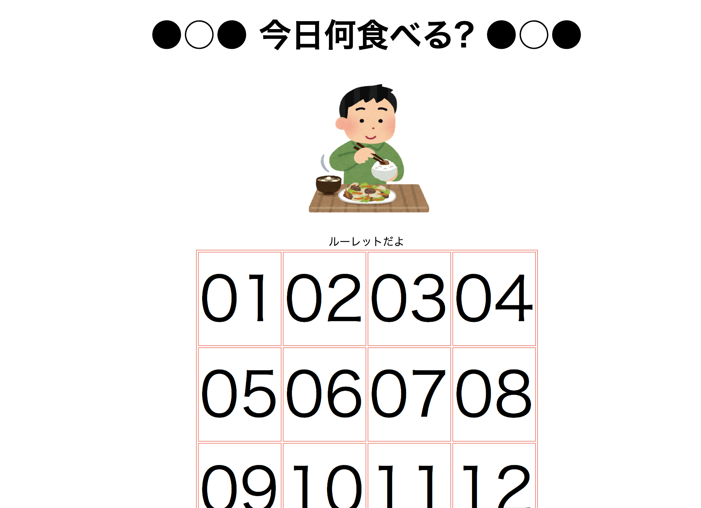
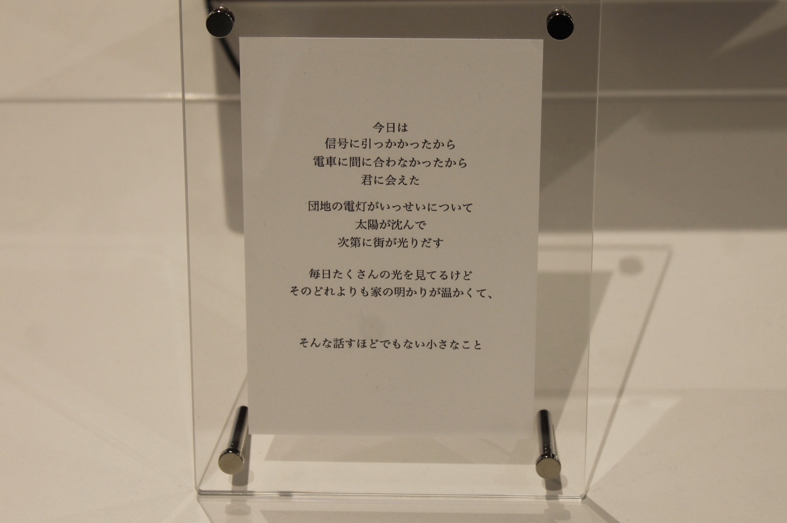

study

photoshopを使って
photoshopで画像編集をする。
20190508 ソフトウェア・ネットワーク演習Ⅰ
詳しく
目玉焼きの黄身増えたら面白いかなあって思ったのでとりあえず焼く。
 そもそも目玉焼きを焼くことから失敗。
そもそも目玉焼きを焼くことから失敗。
 焼き直してみる。
焼き直してみる。
 とりあえず合体させてみる。
とりあえず合体させてみる。
コピースタンプツールで黄身と白身をそれぞれつけて、なるべく自然になるように調整。
目玉焼きを二枚焼いたことによって、白身の色とか黄身とか色々調整しやすかった。
遠目でみると、もとから黄身が二つある贅沢な目玉焼きに見えるぐらいにまではなった！！！

Illustratorを使って
ホームページで使えそうなアイコン作り。
20190510 ソフトウェア・ネットワーク演習Ⅰ
とりあえずコーヒー飲むことが増えてきたからコーヒーのアイコンにしよ〜て感じで決める。
ペンツールとブラシツールがどっちがどっちだかわかってないぐらいに初心者。
ペンツールが難しくて訳わからんかったですが、岸が手伝ってくれてどうにかなりました。

今日何食べる？
今日夜何食べるか提案してくれるルーレットです。もやし炒めからふぐ刺しまであります。
20190624 ソフトウェア・ネットワーク演習Ⅰ
あんまり参考にならない感じになりました。
CSSとか知らない時に作ったので2019年に作られたとは思えない感じになりました。
どうぞやってください→今日何食べる？

プリンター分解後、オートマトン制作
廃棄のプリンターを拾ってきてひたすら分解、どんな部品があったかスプレッドシートに
班それぞれ全然違うオートマトンで面白かった。↓これはうちの子
20191003~20191120 クロステックデザイン演習Ⅱ
役割分担してひたすらまとめる。
だけかと思ってたら、分解した部品からドローイングオートマトンを作れ！という課題がでた。
はて？という感じでしたが、しっかり班でリサーチしてそれはもうとても頑張りました。
結果は動かないわ壊れそうだわで難しかったです。
私たちが参考にしようとしていたのはこれでした↓
・
arduino
詳しいことは動画の通りです。 白石先生としずほさんに教えてもらったら、いつの間にかほぼやってもらってた。
20191016 ソフトウェア・ネットワーク演習Ⅱ
 とりあえずネットで教えてくれている人を参考にする。
とりあえずネットで教えてくれている人を参考にする。
 センサー2個使ったら5vのピン足りないので追加する。
センサー2個使ったら5vのピン足りないので追加する。
 調べたプログラムをつけ足してももちろん全く動かず。
調べたプログラムをつけ足してももちろん全く動かず。
最終これ
ありがとうございました

Spirograph
レーザーカッターを使ってスピログラフ作り。
ギアを何個も同時に動かしてひとつの模様を作ってる人とか天才かなと思いました。
20191031 クロステックデザイン演習Ⅲ
小さい時に楽しくやってたこの感じがすごく懐かしいし、楽しい。
先生が送ってくれたオリジナルギアデータ(?)をイラレで色々さわったら、
レーザーカッターにすぐ切ってもらおう！すぐできる！すげー！
正三角形のギアより、失敗したいびつな三角形の方が立体感がでる模様が書けて、
めちゃくちゃ面白かったです。
・
はんだ付け
中学の時にやったな〜と思い出しながら楽しく進んでましたが、
いざ光らしてみるとめちゃくちゃ熱くなっててびっくりしました。
20191129 クロステックデザイン演習Ⅲ
くっついたら駄目なとこがくっついてたりして、
でも今までより線がすっきりしていい感じになりました。
takuboku
p5.jsで暗号を簡単に作ってくれるツールを作りました。
20191211 ソフトウェア・ネットワーク演習Ⅱ
文学の授業でローマ字日記の回があり、「わざわざ読みにくくするのもまた一興」
みたいな話になってたので、そこから紆余曲折し暗号制作ツールになりました。
p5.jsってかわいい感じがするので、かわいくしたいなと思いました。
やる気はあったものの、結局知識やら技術が追いつかず先生方にたくさん手伝ってもらいました。
毎度毎度すみませんありがとうございます。いつかちゃんとやります
普通の待ち合わせをめんどくさくやってみてください。
・

充電器が熱くなってるのを教えてくれるパンダ
こいつは充電器が発熱していたら教えてくれるパンダです。
20191220 クロステックデザイン演習Ⅲ
パンダ本体は3Dプリンターで出力し、MESHのLEDと温度湿度センサーを使っています。
パンダが充電器と密着した温度センサーかかえており、温度があがると光って教えてくれます。
光るだけでしたが、スマホに直接通知が来たり音が鳴ればもっとわかりやすかったなと思いました。
よく充電器が熱くなるタコ足配線の時におすすめ
パンダのデータを作ってくれたのは丹治くん、データ一発で作ってサイズもぴったりで彼はすごい！！！
クリスマスオレンジ
サプライズのクリスマスツリー
ツリー本体はレーザーカッター使えばすぐ終わる話なのですが、予約いっぱいだったので、
20191225 プランニング表現演習Ⅱ
クリスマスツリーを木で作りました。
上の星は3Dプリンターでかねつきはるかちゃんが出力してくれました。
サプライズの授業でクリスマスツリーが必要だったので作りました。
ちょうどタイムリーに3Dプリンターの授業の時だったので、いい感じに星ができました。
木工室で作りました。レーザーカッターのすごさを身をもって感じました。
想像していることを実現すること、精度をあげるには技術が必要になってくるんだなあ、
と実感した授業にもなりました
いろんな人に協力してもらって良いサプライズになりました。大感謝です。
淡海焼
近江米の米粉を使ったどら焼きで、琵琶湖の波模様が焼き印で押されている、という
20200108 クロステックデザイン演習Ⅱ
滋賀県のおみやげを考えました。プロトタイプです。
琵琶湖を眺めていた時に、琵琶湖っていろんな波の模様があるなあと思い、
滋賀はやっぱ琵琶湖だし、波模様をお土産の中に入れたいと考えた結果焼印に着地しました。
そこに特産品も使われているとより良いよなと思ったので、このどら焼きは近江米の米粉で
作られている、ということになってます。
お米のままお土産で貰うと困るけど、お菓子になる事ですごく身近な存在になる気がします。
どら焼きってどの年代も食べるし、結構良いんじゃないですか！？
授業の時焼印は袋の上からペンで波を描いてたのですが、
せっかくなので針金で焼印をやってみました。
・

「話すほどでもないんだけど、
クロステックデザインコース1回生の合同展覧会で展示した作品です。
20200115 プランニング表現演習Ⅱ・プレゼンテーション演習Ⅱ

映像 6分47秒
・